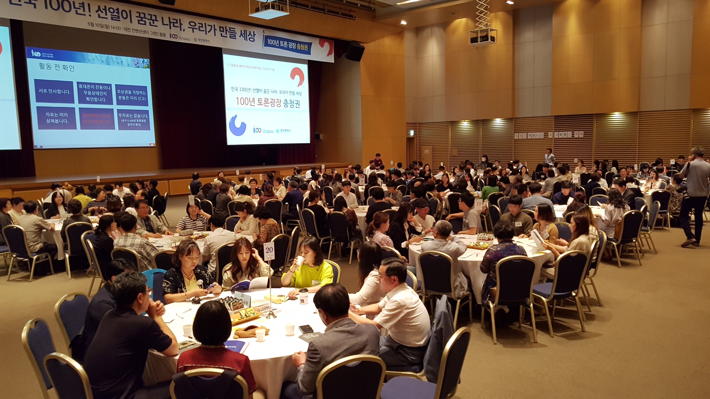

소식과 공지
“100년 토론광장의 새 소식과 공지사항을 알려드립니다.”
공지 사항
100년 토론광장의 공지사항을
알려드립니다
100년 토론광장 충청권 선언문(6.10.)
날짜2019.07.09
조회38

100년 토론광장 충청 선언문
우리는 3·1운동과 대한민국 임시정부 수립 100주년을 맞아 단재 신채호 선생을 비롯하여 유관순 열사와 윤봉길 의사, 한용운 선생을 배출한 충절의 고장이자 4·19혁명의 단초가 되어 민주화운동의 확산에 기여했던 3·8민주의거가 일어났던 이곳에서 충청권역 '100년 토론광장'을 개최했다. 우리는 소중하게 계승해야할 3·1운동과 대한민국임시정부 수립의 가치를 확인하고 대한민국의 미래를 설계하기 위해 치열한 토론을 진행하였으며, 이에 그 결과를 국민 모두에게 알리고, 대한민국 미래 100년이 희망으로 가득차길 바라는 정성과 마음을 모아 다음과 같이 선언한다.
우리는 대한민국의 뿌리가 된 3·1운동과 대한민국임시정부 수립의 정신 중, 특히 다음의 다섯 가지를 계승해야 한다고 토론하였다. 우리의 이 선언은 100년 전 3·1운동과 대한민국임시정부 수립한 선열이 꾸었던 독립된 나라의 꿈과 항일·독립의 정신을 계승한 것이다. 선열이 물려준 애국심, 역사 바로 세우기, 국민주권, 사회통합, 참여정신의 가치를 가슴에 새기고, 이를 토대로 새로운 대한민국의 미래를 펼칠 수 있도록 모든 노력을 다 할 것이다.
우리는 반만 년 동안 이어 온 우리 역사의 힘과 100년 토론광장 참여자의 정성을 모아, 우리가 만들 대한민국 미래 100년은 다음과 같아야 한다고 선언한다.
첫째, 다양한 가치가 존중받고, 다름이 차별이 아니라 사고의 확장이 될 수 있는 세상을 만들자.
둘째, 학연과 지연 등 아닌 자신의 고유한 개성과 능력에 따라 대우받을 수 있는 공정하고 평등한 사회를 만들자.
셋째, 국회의원의 책임을 강화하고, 권한과 인원을 축소하자.
넷째, 정부와 행정서비스 곳곳에 국민의 참여를 반드시 보장하는 나라를 만들자.
다섯째, 국회를 비롯한 공직자에 대한 전면적인 국민소환제를 도입하자.
우리는 이와 같은 세상을 만들기 위해 주권자의 역할을 다할 것이다. 나라를 위해 목숨을 바친 선열의 혼이 우리를 돕고, 희망찬 미래를 염원하는 국민 모두가 우리와 함께할 것이니, 시작이 곧 성공이다. 다만, 저 앞의 밝은 빛을 향하여 힘차게 나아갈 뿐이다.
2019년 6월 10일
100년 토론광장 충청권 참가자 일동